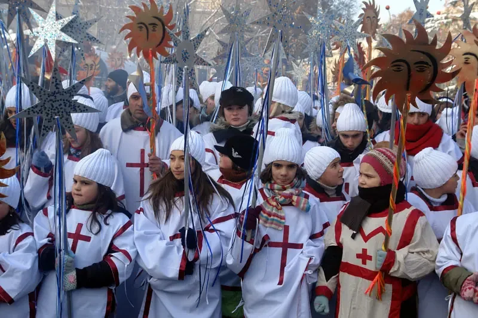
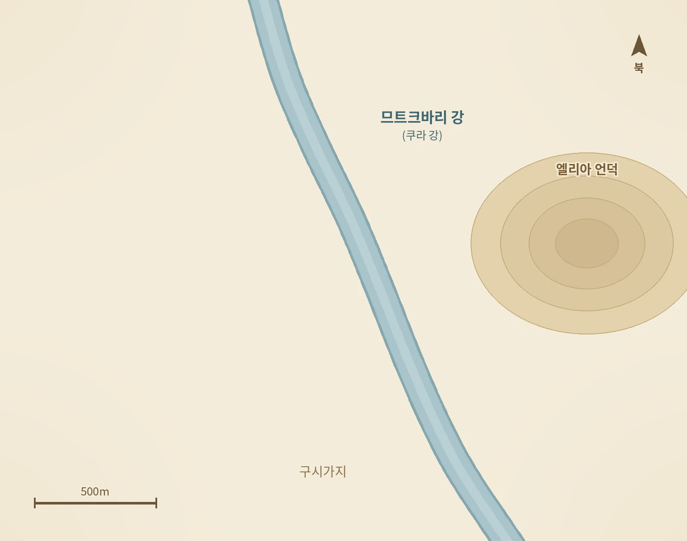
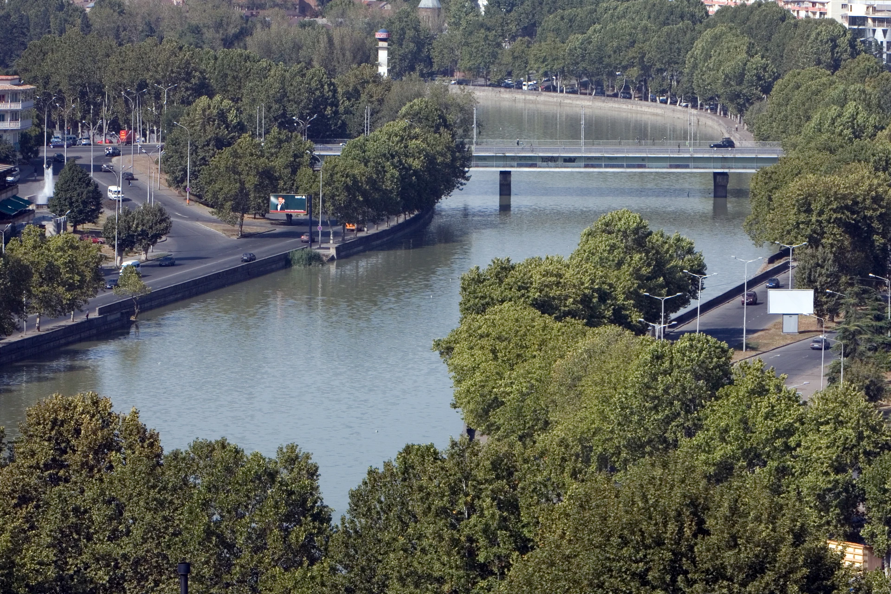
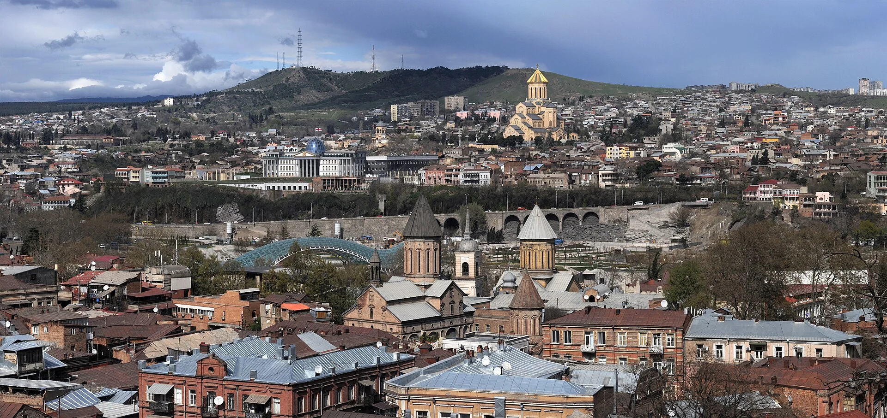

아직 펼치지 않은 카드1월 7일의 성탄과 이름의 날 · 2조지아 성탄 행렬 ‘알릴로’1월 7일 아침 조지아의 거리에 흰 옷 입은 아이들이 앞장선 행렬이 지나가요. 행렬이 끝나면 모은 선물은 어디로 갈까요?천사 옷을 입은 아이들이 거리에서 노래하며 걸어가는 날이 있대.
1월 7일 오후조지아 트빌리시 · 성탄 행렬
조지아 성탄 행렬 ‘알릴로’
1월 7일 오후, 조지아의 수도 트빌리시. 흰 옷 입은 아이들과 성직자, 성가대가 노래하며 큰길을 걸어 강 건너 언덕 위 대성당까지 가요. 지도 위에서 그 길을 한 구간씩 함께 걸어 보세요.
조지아라는 나라에서는 성탄날, 흰 옷 입은 친구들이 노래하며 길을 걸어. 강을 건너 언덕 위 큰 성당까지! 우리도 지도 위에서 같이 걸어 볼까?
검수 전 시안이에요(기준서 1판). 행렬의 길과 시간은 2026년 1월 7일 기록을 따랐어요(해마다 달라질 수 있어요). 옛 풍습은 조지아 민속 학술지와 조지아 백과사전을 따랐고, 자료마다 다른 점은 따로 적었어요. 길잡이 지도는 이 안내서가 그렸어요. 상상은 ‘눈 감고 상상해 보기’에만 썼어요.
시안 확인용카드 단계 미리 보기
1
흰 옷의 아이들
1월 7일은 조지아 정교회의 성탄날이에요. 조지아 교회는 옛 율리우스력으로 절기를 지켜서, 교회 달력으로는 이날이 12월 25일이에요.
이날 수도 트빌리시에서는 큰 행렬이 거리를 걸어요. 2026년에는 오후 2시에 ‘첫 공화국 광장’에서 출발했어요. 순례자와 성직자, 교회 성가대가 십자가와 이콘(정교회에서 기도할 때 쓰는 성화), 깃발을 들고 성탄 찬송을 불렀어요.
행렬 맨 앞에는 흔히 흰 옷 입은 아이들이 서요. 걸어 다니는 천사를 뜻한대요. 위 사진에서도 붉은 십자가를 단 흰 옷의 아이들이 별과 해 모양 장식을 높이 들고 있어요.
이 행렬과 노래를 ‘알릴로(ალილო)’라고 불러요. 조지아 백과사전은 이 이름이 ‘할렐루야’에서 왔다고 봐요.
조지아에서는 1월 7일이 성탄날이야. 흰 옷 입은 친구들이 행렬 맨 앞에서 걸어가.
물어보기흰 옷 입은 아이들은 무엇처럼 보여?
2
집집마다 부르던 노래
옛날 알릴로는 성탄 전날 저녁의 풍습이었어요. 해 질 무렵, 노래꾼들이 마을의 집을 하나하나 찾아가 노래로 성탄을 축하했어요.
세 목소리로 부르는 노래라서, 노래꾼은 적어도 세 사람이었어요. 노래꾼을 조지아 말로 ‘메알릴로에’라고 해요. 알릴로 노랫말 가운데 하나는 제목부터 이래요.
“12월 25일에”
알릴로 노랫말 「오츠다후차 데켐베르사」의 제목 · 조지아 백과사전에서 · 조지아 말을 이 안내서가 옮김
노래는 12월 25일 베들레헴에서 그리스도께서 나셨다고 알려요. 노래꾼들은 자신들이 구걸하러 온 사람이 아니라, 그리스도를 알리러 온 사람이라고 노래했어요.
노래는 그 집에 빵과 포도주, 우유가 넉넉하기를 빌었어요. 집을 짓고 지붕을 얹은 사람들과 조상들을 위해서도 빌었어요.
주인은 기뻐하며 노래꾼에게 먹을 것을 선물했어요. 달걀은 꼭 내주어야 했어요. 달걀은 생명과 풍요를 뜻했어요.
작가 레조 이나니시빌리는 어린 시절 하시미 마을에 맨 먼저 온 노래꾼이 커다란 목동 지팡이를 든 꼬마들이었다고 기억해요. 꼬마들은 받은 선물을 안장 주머니에 챙겼대요.
노래꾼들은 이렇게 모은 것을 바구니에 담아 가난한 이웃을 도왔어요. 소련 시대에는 성탄을 지키는 것이 금지되어 알릴로도 70년 가까이 끊겼다가, 1980~90년대에 다시 살아났어요.
옛날에는 성탄 전날 저녁, 노래꾼들이 집집마다 찾아가 노래했어. 주인은 달걀을 꼭 선물했대.
물어보기우리 집에 노래꾼이 찾아오면, 무엇을 선물하고 싶어?
3
광장에서 대성당까지
오늘의 알릴로는 트빌리시 한가운데를 걷는 큰 행렬이에요. 2026년 행렬은 오후 2시에 출발해 오후 4시쯤 사메바 대성당에서 끝났어요.
행렬이 지나는 동안 시청은 길을 차례로 막고, 차들은 다른 길로 돌아가요. 아래 지도에서 ‘다음 곳으로’를 눌러 행렬과 함께 걸어 보세요.
‘다음 곳으로’를 눌러 2026년 행렬의 길을 따라가 보세요.

첫 공화국 광장루스타벨리 거리자유 광장바라타시빌리 다리아블라바리 광장사메바 대성당트빌리시 시내. 위치와 거리는 대략이에요 · 이 안내서가 그린 길잡이 지도 · 장소 위치는 공개된 좌표를, 길은 2026년 트빌리시 시청 교통 안내를 바탕으로
사메바 대성당에 닿았어요. 행렬이 모은 음식과 선물은 이제 보호 시설로 떠나요.
흰 옷 친구들과 함께 광장에서 출발해서, 다리를 건너, 언덕 위 성당까지 걸어가 보자!
물어보기다리를 건널 때 강물 위로 노래가 들리면 어떤 기분일까?
눈 감고 상상해 보기
1월의 낮, 찬 바람이 볼에 닿아요. 앞쪽에서 노래가 들려요. 낮은 목소리가 길게 깔리고, 그 위로 두 목소리가 겹쳐요. 흰 옷자락과 깃발이 사람들 머리 위로 흔들려요. 다리 아래로 강물이 흐르고, 언덕 위 성당이 점점 가까워져요. 손에 든 작은 꾸러미는 누구에게 갈까요?
눈을 감아 봐. 차가운 겨울바람 속에서 노랫소리가 들려. 흰 옷 입은 친구들이 앞에서 걸어가. 다리를 건너면, 언덕 위에 커다란 성당이 보여!
나의 자리
축제가 곧 나눔이 되는 날이 내게도 있나요?
선물을 받으면 누구랑 나누고 싶어?
마음에 닿는 한 줄을 고르거나 직접 써 보세요. 한 줄을 남기면 이 자리의 도장이 찍혀요. 이 기기에만 저장돼요.
더 깊이
궁금한 칸만 펼쳐 읽어도 괜찮아요.
알고 보면
‘알릴로’라는 이름 조지아 백과사전은 ‘알릴로’라는 이름이 ‘할렐루야’에서 왔다고 봐요. 할렐루야는 ‘주님을 찬양하라’는 뜻의 히브리 말이에요. 성경의 시편 146편부터 150편까지는 모두 ‘할렐루야’로 시작해요.
지방마다 다른 가락 알릴로는 지방마다 다르게 불렀어요. 동쪽 카헤티 지방에서는 낮게 이어지는 베이스 위로 높은 두 목소리가 꾸밈음을 굴리듯 불렀어요. 서쪽의 구리아·이메레티·메그렐리아 지방은 가볍고 날렵하게, 라차·레치후미·스바네티 지방은 더 무겁고 차분하게 불렀다고 해요.
처음 적은 악보, 처음 남긴 녹음 1886년 체코 출신 합창 지휘자 요세프 나브라틸이 알릴로를 처음 오선 악보로 적어 펴냈어요. 1907년에는 영국의 그라모폰 회사가 ‘구리아의 알릴로’를 처음 녹음했어요.
여학생들의 알릴로 1897년 12월 24일 자 신문은, 주로 소녀들로 꾸린 알릴로 노래패가 여학교를 도울 돈을 모았다고 전해요.
끊겼다가 다시 걷기까지
소련 시대에는 성탄을 지키는 것이 금지되었어요. 무신론자 연맹은 1936년 12월 15일부터 이듬해 1월 20일까지 학교와 연극 동아리, 영화관, 강연에서 ‘성탄 반대 운동’을 벌일 계획을 세웠어요. 이 계획서는 조지아 국립 기록 보관소에 남아 있어요.
그래도 1950년대 민속 음악 조사단은 여러 성탄 노래를 녹음해 두었어요. 1979년에는 안드로 시마시빌리가 1920년대 끝 무렵 어린 시절에 들은 ‘아르타누리 알릴로’를 되살려 무대에서 불렀어요.
1980년대에는 젊은 민속 음악학자 에디셰르 가라카니제와 노래패 ‘므티에비’가 알릴로 풍습을 되살리자고 나섰어요. 그 뒤 조지아 교회가 알릴로를 성탄 행렬로 되살렸어요.
2021년과 2022년에는 코로나19 때문에 트빌리시의 행렬이 열리지 않았어요. 2022년에는 그 대신 선물 모으기와 자동차 행렬이 있었어요.
기록마다 다른 점
얼마나 오래되었나 조지아 관광청은 알릴로가 5~6세기까지 거슬러 간다고 소개해요. 다만 근거는 밝히지 않았어요. 조지아 백과사전은 노래의 가락이 그리스도교 이전의 옛 가락에서 왔고, ‘알릴로’라는 이름은 나중에 붙은 것 같다고 적어요.
이름의 뿌리 대부분의 자료는 ‘할렐루야’를 뿌리로 봐요. RFE/RL과의 인터뷰에서 오크로피르 루하제는 해돋이를 뜻하는 조지아 말 ‘알리오니’와 이어졌을지도 모른다고 짐작했어요.
언제 되살아났나 조지아 민속 학술지는 1980년대 민속 음악가들의 운동을 들어요. 조지아 백과사전과 Civil.ge는 1990년대에 되살아났다고 적고, 조지아 투데이(2026)는 2000년 일리아 2세 총대주교의 축복으로 되살아났다고 적어요.
몇 시에 걷나 2015년 조지아 투데이 글과 2021년 RFE/RL 기사는 성탄 아침의 행렬을 적었어요. 2026년에는 오후 2시에 출발했어요. 시간과 길은 해마다 달라질 수 있어요.
같은 소식을 알리는 노래
알릴로 노래꾼들은 노래 속에서 자신들을 그리스도의 탄생을 알리는 사람이라고 불렀어요. 성경에서 이 소식을 처음 알린 것은 천사들이에요. 말씀은 뜻만 옮기고, 본문은 대한성서공회 개역개정으로 이어 드려요.
누가복음 2장 8~14절 밤에 양 떼를 지키던 목자들에게 천사가 나타나, 다윗의 동네에 구주가 나셨다고 알려요. 이어 하늘의 군대가 천사와 함께 하나님을 찬양해요.
요한계시록 19장 1~6절 하늘의 큰 무리가 ‘할렐루야’를 외치며 하나님을 찬양하는 장면이에요.
직접 가 보기


확인한 날 · 2026년 11월 18일 · 바뀌기 쉬운 정보라 정기적으로 다시 확인해요
트빌리시의 알릴로 행렬은 해마다 1월 7일에 열려요. 2026년에는 오후 2시 첫 공화국 광장에서 출발해, 오후 4시쯤 사메바 대성당에서 끝났어요. 조지아 투데이에 따르면 지금은 조지아의 여러 도시와 마을에서도 열려요.
출발 시간과 길은 해마다 트빌리시 시청이 교통 안내로 미리 알려요. 떠나기 전 그해 소식과 여행 안전 정보를 꼭 확인하세요.
행렬의 길 끝까지 금박
공화국 광장에서 사메바 대성당까지, 행렬이 지나는 여섯 곳을 끝까지 따라가면 금박이 입혀져요.
공화국 광장에서 사메바까지 길을 따라가기
모은 선물 전하기 채색
둘 가운데 하나만 해도 카드가 채색돼요.
행렬처럼, 모은 선물을 전할 곳 고르기
아이와 함께 ‘영화처럼 보기’를 끝까지 보기
근거 보기 (11)
- 조지아 민속 학술지(geofolk.ge), 「알릴로 — 성탄을 알리는 노래」 — 성탄 전날 해 질 무렵 집집마다, 노래꾼 ‘메알릴로에’, 노랫말(12월 25일 베들레헴의 탄생 · 구걸이 아니라 알리는 사람 · 빵·포도주·우유 · 집 지은 이와 조상), 하시미의 꼬마 노래꾼과 안장 주머니, 지방마다 다른 가락, 1886년 악보, 1897년 여학생 노래패, 1907년 녹음, 1936~37년 성탄 반대 계획, 1950년대 녹음, 1979년, 1980년대 되살리기
- 조지아 백과사전(조지아 국립 학술원) 「알릴로」 조지아어판 — 성탄 전야, 세 성부라 적어도 세 사람, 달걀은 꼭(생명과 풍요), 노랫말 「12월 25일에」, 옛 가락, 할렐루야에서 온 이름, 1990년대 총대주교가 되살림
- 조지아 백과사전 「알릴로」 영어판 — 성탄 전야의 노래, 지방마다 다르게 부름, 할렐루야에서 온 이름
- 조지아 투데이(2026.1.6), 1월 7일 알릴로 행렬 교통 안내 — 오후 2시 첫 공화국 광장 출발, 4시쯤까지, 3시쯤 자유 광장 30분, 바라타시빌리 다리·오르막·아블라바리 광장
- 조지아 투데이(2026.1.8), 트빌리시 알릴로 행렬 — 순례자·성직자·성가대, 십자가·이콘·깃발, 사메바에서 성탄 기도 예배, 2000년 되살림, 율리우스력으로 1월 7일
- 카프카스 우젤(2026.1.7), 트빌리시 알릴로 행렬 — 오후 2시 출발, 루스타벨리 거리·바라타시빌리 오르막, 성탄 예배 중인 사메바 도착, 모은 음식은 요양 시설·보호 시설·교도소로, 2021·2022년 취소
- OrthoChristian(조지아 투데이 2015년 글 옮겨 실음), 「조지아식 성탄」 — 흰 옷 아이들이 앞장(걸어 다니는 천사), 이콘·십자가·깃발, 보호 시설에 줄 선물
- Civil.ge, 「성탄 행렬 알릴로」 — 루스타벨리 거리를 따라 사메바로, 보호 시설을 위한 선물, 소련 때 금지되고 1990년대에 되살아남
- RFE/RL(2021.1.3), 조지아의 성탄 — 성탄 전날 밤 마을을 돌며 가난한 이웃을 위해 바구니에 모음, 할렐루야(주님을 찬양하라), ‘알리오니’ 짐작, 성탄 아침의 행렬
- 조지아 관광청, 「알릴로」 — 5~6세기 기원 소개, 먹을 것을 모아 어려운 이웃에게, 어르신과 아이들의 보호 시설, 70년 끊김
- OrthodoxWiki, 사메바 성 삼위일체 대성당 — 1995~2004년, 그리스도 탄생 2000년과 자치 1500년 기념, 엘리아 언덕·므트크바리 강 왼쪽 기슭·아블라바리
그림·사진·소리 출처
‘처음 만나는 기독교 문화’의 깊은 카드예요. 카드 단계와 남긴 글은 이 기기에만 저장돼요.